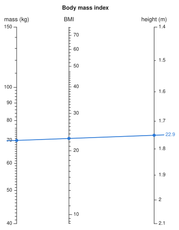
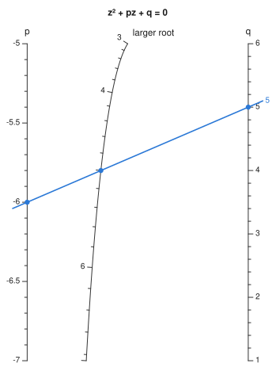
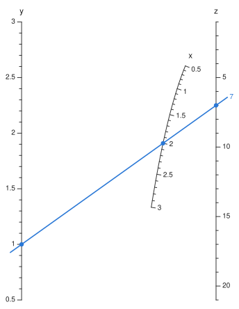
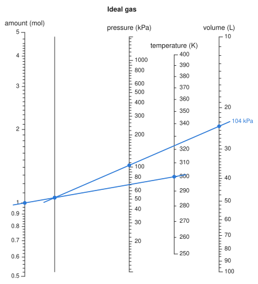

From a formula#
The other constructors need you to rewrite your formula in a separable form and choose its transforms yourself. auto_nomogram does this for you. Pass it the function as you would normally write it:
using Nomograms
bmi = auto_nomogram(
(m, h) -> m / h^2,
Variable(:mass; domain = (40, 150), label = "mass (kg)"),
Variable(:height; domain = (1.4, 2.1), label = "height (m)"),
Variable(:BMI; label = "BMI");
title = "Body mass index",
)
drawing(bmi; isopleths = [isopleth(bmi; mass = 70, height = 1.75, label = "22.9")])
Give each input as a Variable with a domain, or as name => (lo, hi), in the order the function takes them. The last argument names the result; its range is worked out from the function. Labels, tick formats and explicit ticks that you set on the variables are used as given. The transforms are always derived from the function, and replace any you set.
The function can come from anywhere, including another package. Here atan is passed straight from Base:
angle = auto_nomogram(atan, :y => (1, 10), :x => (1, 10), :angle)
evaluate(angle; y = 1, x = 1).angle ≈ π / 4trueWhich formulas have a chart#
A formula z = F(x, y) can be drawn on three straight parallel scales exactly when there are transforms with \(h(z) = f(x) + g(y)\). Differentiating that with respect to each argument gives
so \(\ln|F_x / F_y|\) must split into a function of \(x\) plus a function of \(y\). The converse also holds. If it splits, take \(f'\) and \(g'\) from the two parts. Then \(\nabla(f + g)\) is parallel to \(\nabla F\) everywhere, so \(f + g\) is constant wherever \(F\) is constant. That makes \(f + g\) a function of \(F\), and that function is \(h\). The test goes back to Saint-Robert in 1871 (see the Bibliography). The package relies only on the argument given here, which is complete in itself.
separability_defect applies the test numerically. A mixed second derivative of a logarithm is noisy to compute, so it checks an equivalent identity that needs only first derivatives:
A result of zero means the formula has a chart:
separability_defect((x, y) -> x + y + x * y, (0, 5), (0, 5)), # (1+x)(1+y) - 1
separability_defect((x, y) -> x^2 + x * y + y, (0.5, 5), (0.5, 5))(1.9947654639196344e-10, 0.4940947607156235)The first formula is separable even though it has a cross term, because it equals (1 + x)(1 + y) − 1. The second is not separable, so it has no chart on three straight scales. It does have a chart with one curved scale, which auto_nomogram tries next; see One curved scale.
Recovering the transforms#
When the test passes, the same identity also gives the transforms. Fixing \(y\) at a reference value \(y_0\) gives \(f'(x)\) up to a constant, and fixing \(x\) at \(x_0\) gives \(g'(y)\). Numerical integration turns each into a TabulatedScale. To tabulate \(h\), the package walks from the corner of the domain where \(F\) is smallest to the corner where it is largest. Along that path \(f\) and \(g\) change in the same direction, so \(F\) never has to be inverted.
The transforms are fixed only up to a common sign, and the sign is chosen so that the result axis reads upwards. An input that the result decreases with, such as the cost axis of a profit chart, then runs downwards. It has to, for the lines to give the right answer.
Each axis then gets linear or logarithmic ticks, depending on how its transform spreads out its values. If the geometric mean of the domain lands nearer the middle of the axis than the arithmetic mean does, the axis is treated as logarithmic. This can happen even within a single decade, as with the base axis of log(b, x) over [2, 10]. The shape of the axis is not enough on its own, though: between 100 and 200 the only whole logarithmic values are the two ends. So for an axis with a logarithmic shape, both tick styles are tried, and the one that fits more labels is used.
One curved scale#
A formula with no chart on three straight scales may still have one on two straight scales and a curve. The classic example is the roots of a quadratic. auto_nomogram finds this chart from the formula for the root, so you do not have to derive a determinant. A line from p to q crosses the curve at the larger root of \(z^2 + pz + q = 0\):
root = auto_nomogram(
(p, q) -> (-p + sqrt(p^2 - 4q)) / 2,
Variable(:p; domain = (-7, -5)),
Variable(:q; domain = (1, 6)),
Variable(:root; label = "larger root");
title = "z² + pz + q = 0",
)
drawing(root; isopleths = [isopleth(root; p = -6, q = 5, label = "5")])
The curved scale is not always the result. The formula x² + xy + y, which has no straight-scale chart, is linear in y and in z once x is fixed, so here x goes on the curve:
quad = auto_nomogram((x, y) -> x^2 + x * y + y, :x => (0.5, 3), :y => (0.5, 3), :z)
drawing(quad; isopleths = [isopleth(quad; x = 2, y = 1, label = "7")])
Write the relation as \(G(u, v, w) = 0\), with \(u\) and \(v\) on straight scales and \(w\) on the curve. Such a chart exists exactly when there are transforms \(f(u)\) and \(g(v)\) that make every level set \(w = c\) a straight line, \(g = m(c)\,f + k(c)\). If you put \(f\) on one straight axis and \(g\) on a parallel one, the alignment lines for each \(c\) then all pass through one point, and that point is where \(c\) goes on the curve. Along a level set \(dg/df = -\bigl(g'(v)/f'(u)\bigr)\,G_u/G_v\), so the condition is that \(L = \ln|G_u / G_v|\) splits as \(\varphi(w) + a(u) - b(v)\), with \(a = \ln f'\) and \(b = \ln g'\). Differentiating once with respect to \(u\) and once with respect to \(v\) gives, along each level set,
where \(A\) and \(B\) are constant on the level set. The test is therefore a two-parameter least-squares fit on each of 25 level sets. If any level set fails to fit within \(10^{-6}\), that arrangement is ruled out. When every level set fits, \(B\) gives \(a' = L_u - B\,w_u\) and \(b' = -(L_v - B\,w_v)\). Integrating these gives the two straight scales, and the common point of each level's lines gives the curve. Each of the three variables is tried on the curve in turn, starting with the result, and the finished chart is checked against your function like any other.
The test needs third derivatives of the formula. These are computed exactly by automatic differentiation (ForwardDiff.jl) through the formula as you wrote it, so your function must accept generic number types as well as Float64. If a formula has neither kind of chart, auto_nomogram throws an error that gives the reason for each arrangement it tried:
try
auto_nomogram((x, y) -> sin(x) + exp(y) + x * y, :x => (0, 2), :y => (0, 1))
catch err
println(sprint(showerror, err))
endArgumentError: z = F(x, y) has no chart on three straight scales (the function is not monotone in :x over (0.0, 2.0), so :x cannot be a straight scale), nor one with a single curved scale:
• :z on a curve — its level sets are not straight lines under any transforms of :x and :y (misfit 0.098)
• :x on a curve — its level sets are not straight lines under any transforms of :y and :z (misfit 0.0092)
• :y on a curve — its level sets are not straight lines under any transforms of :x and :z (misfit 0.94)
It may still have a chart with more curved scales, or a net, from a form you derive: see `determinant_nomogram` and `net_nomogram`. Or draw it as curves of constant value, which any formula has: see `concurrency_chart`.auto_nomogram does not search for charts with more than one curved scale, or for curved stages in a chain of three or more inputs. For those, derive the form yourself and use determinant_nomogram. Any formula of two inputs can also be drawn as a concurrency chart, which is read where curves cross instead of along a line.
More than two inputs#
One alignment line relates only three scales, so a formula with three or more inputs becomes a chain of charts linked by unmarked turning lines. You lay a line across the first stage, note where it crosses the turning line, then pivot about that point to read the next stage. auto_nomogram finds the chain for you. In this chart, lay a line from amount to temperature and mark where it crosses the turning line. Then lay a line from that mark to volume and read the pressure:
gas = auto_nomogram(
(n, T, V) -> n * 8.314 * T / V, # kPa, with V in litres
Variable(:n; domain = (0.5, 5), label = "amount (mol)"),
Variable(:T; domain = (250, 400), label = "temperature (K)"),
Variable(:V; domain = (10, 100), label = "volume (L)"),
Variable(:P; label = "pressure (kPa)");
title = "Ideal gas",
)
drawing(gas; isopleths = isopleth(gas; n = 1, T = 300, V = 24, label = "104 kPa"))
A formula \(F(x, y, w)\) splits this way when it depends on some pair of inputs only through one combination of them, \(F = G(T(x, y), w)\). That holds exactly when \(F_x / F_y\) does not depend on \(w\). In that case the level curves of \(F\) in the \((x, y)\) plane are the same family for every \(w\). The first stage charts the combination \(T\), and the second charts \(z\) from \(T\) and \(w\). Formulas with more inputs are reduced in the same way, one pair at a time.
The choice of which pair goes first affects the layout but not the answers. Each stage puts its result between its inputs, closest to the one with the wider span. If the last stage pairs a scale covering several decades with one covering a narrow range, the result axis ends up squeezed against the wide one. To avoid this, auto_nomogram builds every workable pairing and keeps the one whose axes are furthest apart. For a product of four inputs, that can mean two pairs joined at the end instead of one long chain. Each earlier stage is then mirrored and resized so that the input it places inside the rest of the chain falls in a gap between two axes instead of on top of one.
A pair can pass the test and still fail to give a chart. In (a + b)·c, the first stage needs a + b on a linear scale and the second needs it on a logarithmic one. No layout of straight scales can do both, so this formula needs a net. auto_nomogram tries every pairing, and the error says what went wrong with each:
try
auto_nomogram((a, b, c) -> (a + b) * c, :a => (1, 10), :b => (1, 10), :c => (1, 10), :d)
catch err
println(sprint(showerror, err))
endArgumentError: cannot split d = F(a, b, c) into a chain of three-scale charts. Each pair of inputs was tried as the first stage:
• :a with :b — the two stages want their combination on different scales, so this pair needs a net rather than a pivot
• :a with :c — the result does not depend on them through a single combination of the two (defect 1.04)
• :b with :c — the result does not depend on them through a single combination of the two (defect 1.04)How the result is checked#
If the inputs have units, auto_nomogram first checks the formula's dimensions. For example, if the result should be in kg/m² and the formula gives kg/m, the formula is refused before any chart is built.
Once the chart is built, it is solved over a grid of inputs and every answer is compared with your function. If an answer is off by more than rtol times the result's range, no chart is returned: the call throws an error that reports the disagreement it measured. For two inputs, the chart's relation is your function itself, so max_relation_residual measures the chart directly against the formula you wrote:
max_relation_residual(bmi)1.4097594203121844e-9A formula is also refused if it is not monotone in each input over its domain, because a straight scale cannot fold back on itself.
How long it takes
The common code paths are compiled when the package is installed, so the first chart in a session takes about as long as later ones. A chart with up to four inputs takes a fraction of a second. Five inputs take a couple of seconds, mostly spent comparing layouts, and the first five-input chart in a session spends several more seconds compiling. The search for a curved scale runs only when straight scales fail. Its automatic differentiation is compiled again for each new formula, so the first curved chart from a function takes a few seconds, and building it again takes a fraction of a second.